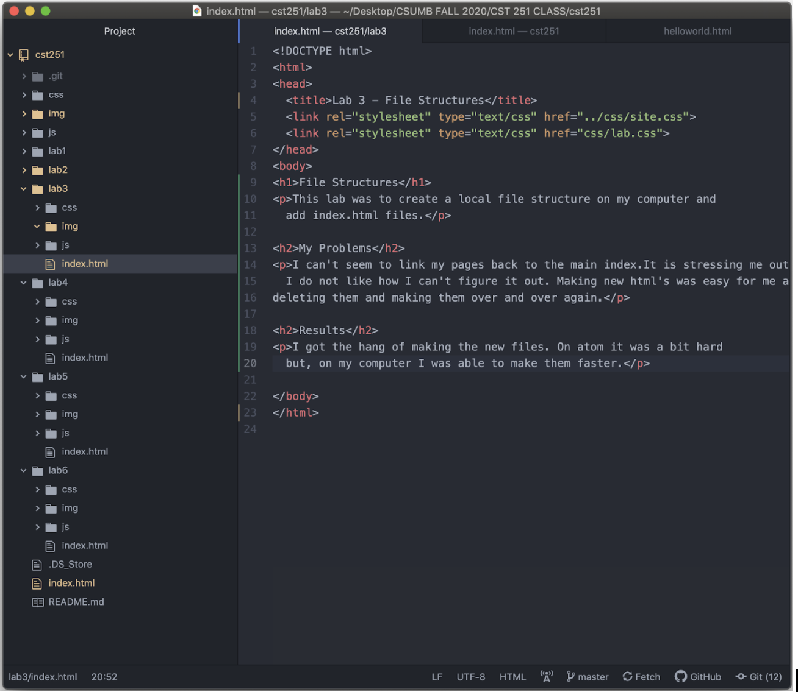
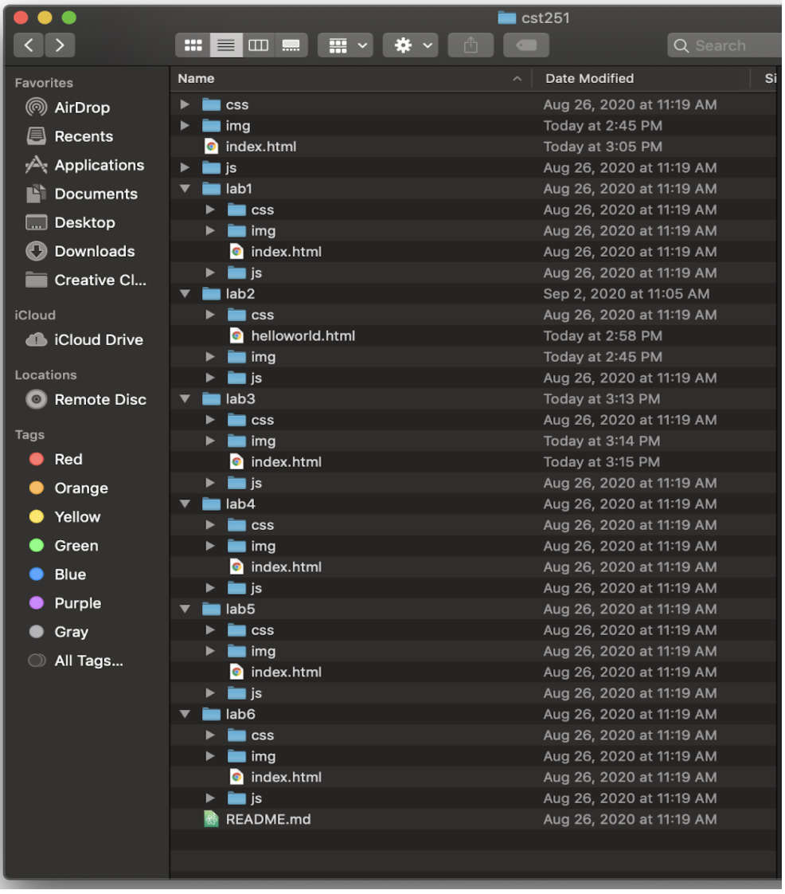
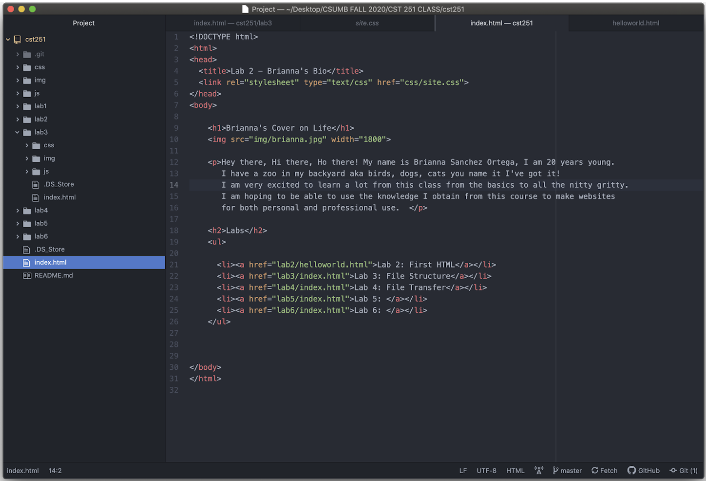

This lab was to create a local file structure on my computer and add index.html files.
I can't seem to link my pages back to the main index.It is stressing me out. I do not like how I can't figure it out. Making new html's was easy for me after deleting them and making them over and over again.
I got the hang of making the new files. On atom it was a bit hard but, on my computer I was able to make them faster.
 File structure on computer
Links on homepage to different labs